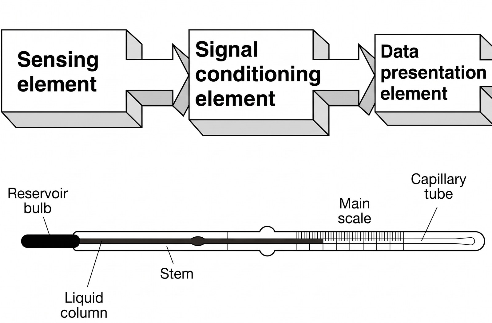
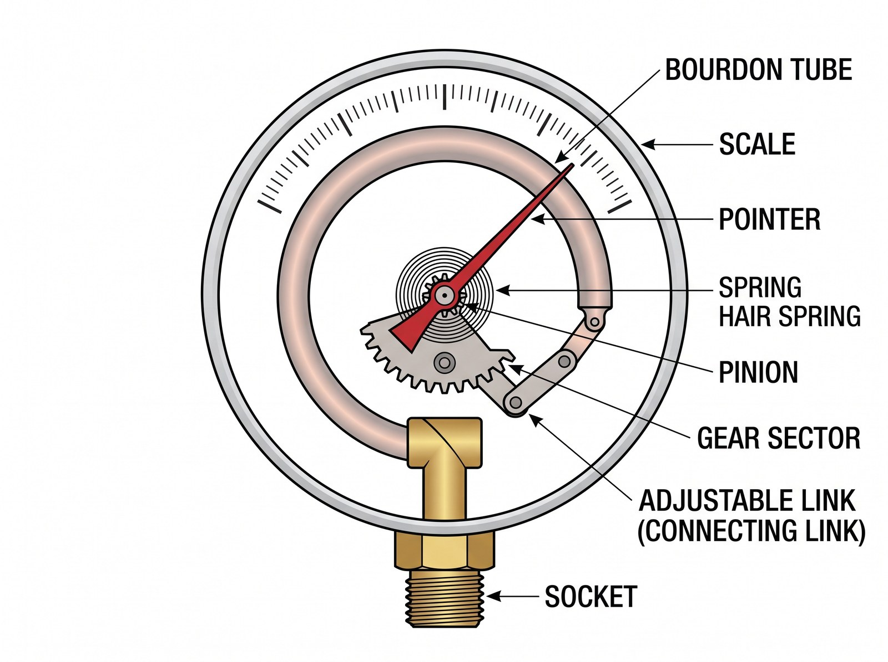
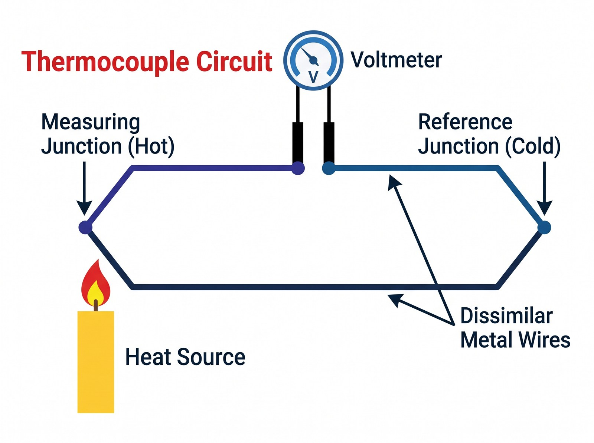
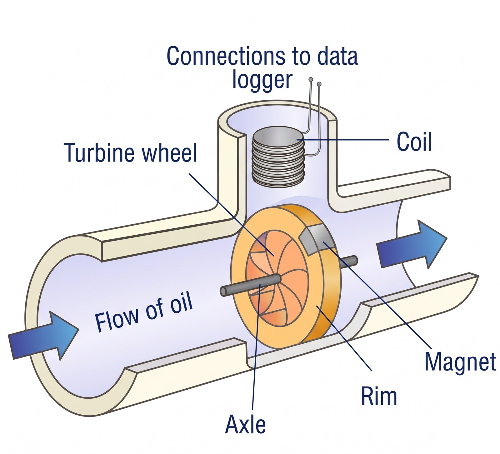
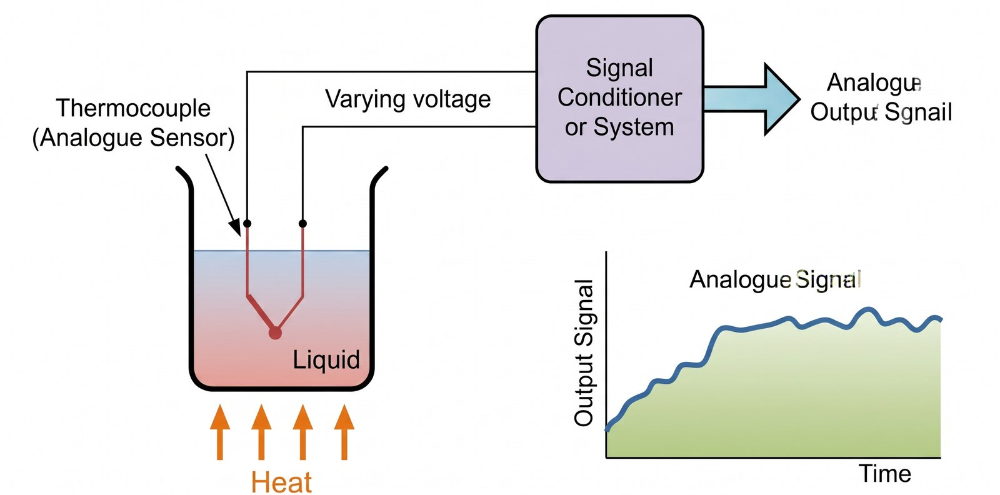
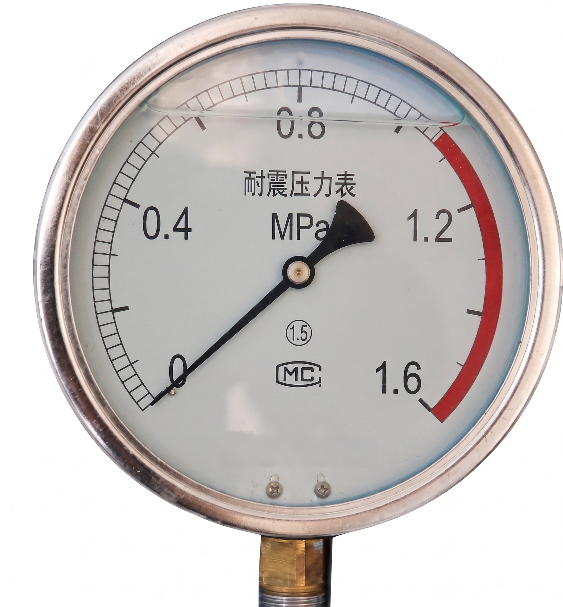
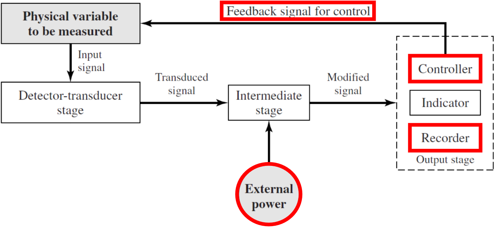

Introduction to Measurements
تعتبر مادة Mechanical Measurements & Instrumentation من المواد الأساسية في الهندسة الميكانيكية؛ لأنها بتشرح إزاي نقيس الكميات الفيزيائية المختلفة، وإزاي نحول القياسات دي إلى معلومات نقدر نقرأها ونستخدمها في التحليل واتخاذ القرارات الهندسية.
| Course Title | Lecture Title |
|---|---|
| Mechanical Measurements & Instrumentation (ME305) | Introduction |
خلينا نفهم معنى العنوان:
- Mechanical: متعلق بالأنظمة والتطبيقات الميكانيكية.
- Measurements: عملية قياس الكميات الفيزيائية، مثل Pressure وTemperature وForce وVelocity.
- Instrumentation: المجال اللي بيدرس أجهزة القياس ومكوناتها وطرق استخدامها والتعامل مع الإشارات الناتجة عنها.
What Is a Measurement?
Measurement is the process of determining the value of a physical quantity.
الـ Measurement هي عملية تحديد قيمة كمية فيزيائية معينة. على سبيل المثال، لو عايزين نعرف درجة حرارة موتور، بنستخدم جهاز مناسب لقياس Temperature، وبعد القياس نحصل على قيمة عددية، مثل:
القيمة دي بتساعدنا نحدد هل الموتور بيشتغل في نطاق درجة الحرارة الطبيعي، ولا درجة حرارته مرتفعة وتحتاج إلى فحص. أمثلة أخرى:
| Physical Quantity | Example of Measurement | Possible Instrument |
|---|---|---|
| Temperature | 85 °C | Thermocouple |
| Pressure | 200 kPa | Pressure Gauge |
| Force | 100 N | Force Sensor |
| Velocity | 15 m/s | Velocity Measuring Device |
| Displacement | 20 mm | Displacement Sensor |
التعريف السابق تعريف تمهيدي لتسهيل الفهم، وليس اقتباسًا حرفيًا من سلايد الدكتور؛ لأن السلايد لا تحتوي على تعريف مكتوب للـ Measurement.
Course Content
يعرض الدكتور الموضوعات الأساسية التي ستتم دراستها خلال الكورس.
| No. | Topic |
|---|---|
| 1 | Introduction to Measurements |
| 2 | Static Performance Characteristics of Measuring Instruments |
| 3 | Dynamic Performance Characteristics of Measuring Instruments |
| 4 | Pressure Measurements |
| 5 | Flow Measurements |
| 6 | Velocity Measurements |
| 7 | Temperature Measurements |
| 8 | Force Measurements |
| 9 | Stress–Strain Measurements |
خلينا نفهم العلاقة بين أجزاء المنهج.
Introduction to Measurements
ده الجزء التمهيدي اللي بيوضح أهمية القياس، والمكونات الأساسية لنظام القياس، ودور كل مكون.
Static Performance Characteristics
الـ Static Performance Characteristics بتتناول أداء جهاز القياس في ظروف يكون فيها الدخل ثابتًا أو لا يتغير مع الزمن في نطاق الدراسة. ومن أمثلة الخصائص التي تُدرس عادةً في هذا المجال:
- Accuracy
- Precision
- Sensitivity
- Linearity
- Hysteresis
- Resolution
الموضوعات السابقة أمثلة توضيحية على خصائص الأداء الساكن، وليست قائمة مكتوبة في سلايد الـ Course Content.
Dynamic Performance Characteristics
الـ Dynamic Performance Characteristics بتدرس سلوك جهاز القياس لما الكمية المراد قياسها تتغير مع الزمن. مثلًا، لو درجة حرارة جسم ارتفعت فجأة، هل جهاز قياس الحرارة هيعرض القيمة الجديدة فورًا؟ ولا هيحتاج وقتًا حتى يقترب منها؟ ده مثال على Dynamic Response، وهي الفكرة الأساسية وراء دراسة الاستجابة الديناميكية.
Specific Measurement Topics
باقي المنهج بيركز على قياس كميات فيزيائية محددة:
- Pressure Measurements: قياس الضغط.
- Flow Measurements: قياس معدل تدفق المائع.
- Velocity Measurements: قياس السرعة.
- Temperature Measurements: قياس درجة الحرارة.
- Force Measurements: قياس القوة.
- Stress–Strain Measurements: قياس الإجهاد والانفعال.
كل موضوع من دول بيحتاج اختيار جهاز مناسب، وفهم مبدأ عمله، وطريقة التعامل مع الإشارة الناتجة عنه.
Reference Books and Instructor
السلايد بتذكر ثلاثة مراجع أساسية للكورس، لكن السلايد لا تحدد فصلًا معينًا مطلوبًا من كل كتاب:
- Experimental Methods for Engineers — J. P. Holman, McGraw Hill.
- Instrumentation, Measurements, & Experiments in Fluids — Ethirajan Rathakrishnan, Taylor & Francis.
- Mechanical Measurements — S. P. Venkateshan, Springer.
| Instructor | Position | Department |
|---|---|---|
| Dr. Mohamed Rashed | Assistant Professor | Mechanical Power Engineering – Cairo University |
المعلومات دي تنظيمية، ومش جزءًا من المفاهيم العلمية الأساسية للمحاضرة.
Why We Carry Out Measurements
دي من أهم سلايدز المحاضرة؛ لأنها بتجاوب عن سؤال أساسي: Why do engineers perform measurements instead of relying only on calculations? الدكتور ذكر ستة أسباب رئيسية.
1 · To Validate Mathematical Models and Simulations
To validate mathematical models and simulations.
الـ Mathematical Model هو تمثيل رياضي لسلوك نظام فيزيائي، بينما الـ Simulation هي عملية استخدام نموذج لحساب أو توقع سلوك النظام تحت ظروف معينة. لكن وجود معادلة رياضية أو Simulation مش معناه بالضرورة إن النتائج صحيحة في الواقع. عشان كده بنعمل Measurements ونقارن النتائج الفعلية بالنتائج المتوقعة.
Example: لو مهندس صمم نموذجًا رياضيًا يتوقع إن درجة حرارة موتور معين هتكون 80 °C، نقدر نقيس درجة الحرارة الفعلية ونقارنها بالقيمة المتوقعة. لو القيمة المقاسة قريبة من التوقعات ضمن الحدود المقبولة، ده يدعم صلاحية النموذج في ظروف الاختبار. أما لو فيه اختلاف كبير، فده ممكن يشير إلى وجود افتراضات غير مناسبة أو عوامل لم يأخذها النموذج في الاعتبار.
Measurements help engineers determine whether mathematical models and simulations represent real physical behavior accurately enough for their intended use.
2 · To Investigate Model Limits
To investigate model limits.
أي Mathematical Model بيكون صالحًا في نطاق معين من ظروف التشغيل، ومش شرط يدي نتائج صحيحة بنفس الدرجة في كل الظروف. على سبيل المثال، نموذج معين ممكن يكون دقيقًا عند درجات حرارة منخفضة، لكنه يصبح أقل دقة عند درجات حرارة مرتفعة جدًا. هنا بنستخدم القياسات عشان نحدد حدود صلاحية النموذج، أو ما يسمى Model Limits.
Example: لو نموذج لتوقع أداء مضخة بيدي نتائج جيدة عند معدل تدفق معين، لكن نتائجه بتختلف بشكل واضح عند معدلات تدفق أعلى، يبقى محتاجين نختبر النموذج عند الظروف المختلفة ونحدد النطاق اللي يمكن الاعتماد عليه فيه.
Measurements help identify the operating conditions under which a model remains reliable.
3 · To Determine Information That Cannot Be Obtained by Calculations
To determine information that can not be obtained by calculations.
في بعض الحالات، الحسابات وحدها مش بتكون كافية للحصول على كل المعلومات المطلوبة عن النظام الحقيقي. ممكن يكون عندنا نموذج نظري، لكن الواقع يحتوي على تأثيرات معقدة أو متغيرة يصعب تمثيلها بالكامل. ذكر الدكتور في السلايد المثال التالي:
Almost all industrial flows are turbulent.
الـ Turbulent Flow هو نوع من تدفق الموائع يتميز بتغيرات واضطرابات غير منتظمة في السرعة والضغط، مع وجود حركة معقدة للمائع. في التطبيقات الصناعية، ممكن تكون تفاصيل التدفق معقدة لدرجة إن الاعتماد على الحسابات وحدها لا يكفي للحصول على جميع المعلومات المطلوبة. لذلك، بنستخدم Measurements للحصول على بيانات فعلية عن النظام.
Example: في خط أنابيب صناعي، قد نحتاج إلى قياس معدل التدفق الفعلي أو فرق الضغط بين نقطتين بدلًا من الاعتماد على الحسابات النظرية فقط.
Measurements provide experimental information about real systems that may not be fully available from calculations alone.
4 · To Satisfy the Customer Regarding the Performance of the Equipment
To satisfy the customer regarding the performance of the equipment.
في التطبيقات الهندسية والصناعية، لازم نتأكد إن المعدات بتؤدي الوظيفة المطلوبة بالمواصفات المتفق عليها. الـ Measurements بتوفر دليلًا يمكن الاعتماد عليه لتقييم الأداء الفعلي للمعدات.
Example: لو شركة بتصنع مضخة، والعميل محتاج معدل تدفق معين عند ضغط محدد، ممكن يتم اختبار المضخة وقياس Flow Rate وPressure للتأكد من إنها تحقق المتطلبات. لو النتائج مطابقة للمواصفات، ده بيدعم قبول أداء المعدة.
Measurements are used to verify that equipment meets specified performance requirements.
5 · To Investigate Technical Problems
To investigate technical problems.
لما تحصل مشكلة فنية في نظام هندسي، القياسات بتساعدنا نفهم المشكلة بدلًا من الاعتماد على التخمين. بنقيس الكميات المرتبطة بالمشكلة، ونقارن النتائج بالقيم الطبيعية أو المتوقعة.
Example: لو مضخة بتتعرض لارتفاع غير طبيعي في درجة الحرارة، نقدر نقيس:
- Temperature
- Pressure
- Flow Rate
- Vibration
النتائج ممكن تساعدنا في تحديد السبب المحتمل للمشكلة، لكن تحديد السبب النهائي قد يحتاج إلى اختبارات إضافية.
Measurements help diagnose technical problems by providing evidence about the actual operating condition of a system.
6 · To Validate New Ideas
To validate new ideas.
لما مهندس يقترح فكرة جديدة لتحسين أداء جهاز أو تصميم نظام مختلف، لازم يختبر الفكرة عمليًا. الـ Measurements بتساعدنا نعرف هل الفكرة حققت التحسين المطلوب فعلًا، ولا إن النتائج مختلفة عن المتوقع.
Example: لو مهندس اقترح تعديلًا في تصميم مبادل حراري بهدف تحسين انتقال الحرارة، يمكن قياس درجات الحرارة ومعدل التدفق قبل التعديل وبعده، ثم مقارنة النتائج.
Measurements help evaluate whether a new engineering idea produces the expected improvement in real operation.
Summary of the Reasons for Measurements
| Reason | Purpose |
|---|---|
| Validate mathematical models and simulations | Compare predicted behavior with real behavior |
| Investigate model limits | Determine where a model remains reliable |
| Obtain information unavailable from calculations | Measure real physical behavior |
| Satisfy customer requirements | Verify equipment performance |
| Investigate technical problems | Diagnose abnormal operating conditions |
| Validate new ideas | Evaluate proposed improvements experimentally |
Measurements and Calculations
Generally, measurements can be much easier in many cases and are essential for validations anyway.
الدكتور بيوضح هنا إن القياسات ممكن تكون أسهل من إجراء حسابات معقدة في بعض الحالات، وإنها تظل مهمة للتحقق من صحة النتائج حتى لو قدرنا نحسبها نظريًا. خلينا نفهم الفكرة من خلال مثال: لنفترض إننا عايزين نحدد درجة حرارة سطح جزء من ماكينة. ممكن نحاول حساب درجة الحرارة باستخدام نموذج حراري، لكن الحساب قد يحتاج إلى معرفة:
- Thermal Conductivity
- Heat Transfer Coefficient
- Boundary Conditions
- Heat Generation Rate
ولو بعض القيم دي غير معروفة بدقة، الحساب ممكن يصبح معقدًا أو تكون نتائجه غير مؤكدة. في الحالة دي، استخدام جهاز مناسب لقياس درجة الحرارة قد يكون أسهل للحصول على القيمة الفعلية. ومع ذلك، القياس نفسه قد يحتاج إلى اختيار جهاز مناسب، ومعرفة دقته، والتأكد من إنه لا يؤثر على النظام بصورة غير مقبولة.
Measurements and calculations are complementary methods. Measurements provide experimental evidence, while calculations and simulations help explain, predict, and analyze system behavior.
Main Parts of Measurement Systems
دي أهم فكرة في الجزء الثاني من المحاضرة: Measurement System مش مجرد جهاز بنقرأ منه رقمًا، لكنه مجموعة من العناصر اللي بتشتغل مع بعض عشان نحول الكمية الفيزيائية المراد قياسها إلى نتيجة مفهومة يمكن قراءتها أو تسجيلها أو استخدامها في التحكم. في السلايدز، الدكتور بيعرض ثلاثة أجزاء أساسية:
- Sensing Element
- Signal Conditioning Element
- Data Presentation Element
ويوضح الرسم العام كمان مراحل الإشارة، ووجود External Power وFeedback Signal for Control في النظام الموضح (هنشرحه في قسم الـ Complete Block Diagram).
The Three Main Elements and a Liquid-in-Glass Thermometer
الشكل ده بيجمع فكرتين: فوق، السلسلة الأساسية لأي Measurement System (Sensing element → Signal conditioning element → Data presentation element)، وتحت، جهاز حقيقي بسيط هو Liquid-in-Glass Thermometer بأجزائه المكتوبة على الرسم. الفكرة إننا نبص على جهاز قياس مألوف ونحاول نشوف فيه نفس التسلسل: حاجة بتحس بالكمية، وحاجة بتوصّل أو تعدّل أثرها، وحاجة بتعرض النتيجة للمستخدم.

← اسحب لرؤية المزيد →
Fig. 1 — Measurement-system elements (top) and thermometer parts (bottom)
- Sensing element — أول مرحلة، بتتفاعل مع الكمية المراد قياسها.
- Signal conditioning element — المرحلة الوسيطة اللي بتعالج الإشارة عند الحاجة.
- Data presentation element — المرحلة الأخيرة اللي بتعرض أو تسجل النتيجة.
- Reservoir bulb · Liquid column — الخزان والعمود السائل في الثيرمومتر.
- Stem · Capillary tube — الساق والأنبوب الشعري اللي بيتحرك فيه السائل.
- Main scale — التدريج اللي بيُقرأ عليه الناتج.
المحاضرة النصية ما بتشرحش الثيرمومتر ده بالتفصيل، فتقسيم أجزائه على العناصر الثلاثة هنا تفسير تعليمي مش كلام منسوب للدكتور: الـ bulb مع السائل هو الجزء اللي بيتأثر بدرجة الحرارة، والـ scale هو اللي بيقدّم القراءة للمستخدم.
أي جهاز قياس، حتى البسيط جدًا، ممكن نحلله لـ Sensing → Signal Conditioning → Data Presentation. وقد لا يحتوي كل جهاز على مرحلة معالجة منفصلة واضحة، لأن الاحتياج بيختلف حسب الجهاز والتطبيق.
The General Measurement Process
تخيل إننا عايزين نقيس ضغط الهواء داخل خزان. عملية القياس يمكن فهمها بالشكل التالي:
خلينا نمشي مع الإشارة خطوة بخطوة.
- Physical Quantityالكمية الفيزيائية المراد قياسها هي الضغط داخل الخزان.
- Sensing Elementيتفاعل عنصر الاستشعار مع الضغط، وينتج تغيرًا فيزيائيًا أو إشارة مرتبطة بقيمة الضغط.
- Signal Conditioning Elementلو الإشارة الناتجة محتاجة إلى تقوية أو معالجة أو إزالة تشويش، يتم التعامل معها في هذه المرحلة.
- Data Presentation Elementفي النهاية، تظهر النتيجة على مؤشر أو شاشة أو وسيلة تسجيل، بحيث يستطيع المستخدم قراءتها أو الاحتفاظ بها.
مش كل نظام قياس لازم يحتوي على كل عمليات المعالجة المذكورة في السلايد. الاحتياجات بتختلف حسب طبيعة الإشارة والجهاز والتطبيق.
Sensing Element
ده أول جزء أساسي في نظام القياس. الـ Sensing Element هو الجزء اللي يتفاعل مع الكمية الفيزيائية المراد قياسها. على سبيل المثال، في جهاز قياس الضغط، لازم يكون فيه عنصر يستجيب للضغط. وفي جهاز قياس درجة الحرارة، لازم يكون فيه عنصر تتغير إحدى خصائصه استجابةً لدرجة الحرارة. السلايد بتقدم مفهومين مهمين جدًا: Transducer وSensor.
Transducer
Transducer – a device that converts one form of energy (electrical, mechanical, chemical, electromagnetic, acoustic, thermal) to another.
الـ Transducer هو جهاز بيحوّل شكلًا من أشكال الطاقة إلى شكل آخر. الأشكال المذكورة في السلايد تشمل:
- Electrical Energy
- Mechanical Energy
- Chemical Energy
- Electromagnetic Energy
- Acoustic Energy
- Thermal Energy
المهم هنا إن الـ Transducer مش لازم يحوّل كل الأنواع دي، لكنه بيحوّل نوعًا من الطاقة إلى نوع آخر بحسب مبدأ عمله.
- Example 1 — Loudspeaker: الـ Loudspeaker بيحوّل الإشارة الكهربائية إلى حركة ميكانيكية في الغشاء، والحركة دي بتنتج موجات صوتية. إذن، هو مثال على تحويل الطاقة الكهربائية إلى حركة ميكانيكية وصوت.
- Example 2 — Thermocouple: الـ Thermocouple بيحوّل فرقًا في درجة الحرارة، وفق ظروف تشغيله وتركيبه، إلى إشارة كهربائية يمكن قياسها.
- Example 3 — Bourdon Tube Pressure Gauge: يستخدم تأثير الضغط في تشويه أنبوب مرن، ثم يحوّل الحركة الميكانيكية إلى حركة مؤشر على تدريج. ده مثال على تحويل تأثير الضغط إلى حركة ميكانيكية قابلة للقراءة.
A transducer converts one form of energy into another form of energy.
Sensor
Sensor (special case) – a transducer that converts a parameter into an electric signal (electrical energy).
الـ Sensor هو حالة خاصة من الـ Transducer، حيث يحوّل الكمية أو الـ Parameter المراد قياسها إلى إشارة كهربائية. الفرق المهم إن التعريف في السلايد بيشترط إن الإشارة الناتجة عن الـ Sensor تكون كهربائية.
Example — Temperature Sensor: لو عندنا Temperature Sensor، فإن الكمية المراد قياسها هي درجة الحرارة. استجابة الحساس قد تكون في صورة جهد كهربائي أو تغير في المقاومة أو إشارة كهربائية أخرى، بحسب نوع الحساس. بعد ذلك، يمكن معالجة الإشارة وقراءتها باستخدام النظام المناسب.
كل Sensor وفق التعريف الوارد في السلايد هو نوع خاص من Transducer، لكن ليس كل Transducer لازم يكون Sensor بالمعنى المحدد هنا. فمثلًا، الـ Loudspeaker يعتبر Transducer، لكنه لا يحوّل الكمية المراد قياسها إلى إشارة كهربائية؛ بل يحوّل الإشارة الكهربائية إلى صوت.
Difference Between Transducer and Sensor
| Point | Transducer | Sensor |
|---|---|---|
| Basic role | Converts one form of energy into another | Converts a parameter into an electrical signal |
| Output | Depends on the conversion process | Electrical signal |
| Relationship | General category | Special case of a transducer |
| Example | Loudspeaker | Temperature sensor |
لو السؤال طلب تعريف Transducer، ركّز على تحويل الطاقة من شكل إلى شكل آخر. أما لو طلب تعريف Sensor وفق السلايد، فلا تنسَ الجزء الخاص بتحويل الـ Parameter إلى Electric Signal.
Examples of Sensing Elements
السلايدز تعرض مثالين بصريين مهمين يساعدوا في فهم فكرة الـ Sensing Element: الـ Bourdon Tube Pressure Gauge والـ Thermocouple.
Bourdon Tube Pressure Gauge
هو مثال على جهاز قياس الضغط باستخدام عنصر ميكانيكي يستجيب للضغط. يحتوي الجهاز على أنبوب منحني ومرن، ويتغير شكله عندما يتعرض للضغط الداخلي. الحركة الناتجة تنتقل من خلال آلية ميكانيكية إلى مؤشر يتحرك على تدريج. وبالتالي، يستطيع المستخدم قراءة الضغط من موضع المؤشر.
Components of a Bourdon Tube Pressure Gauge
الرسم بيوضح الأجزاء الداخلية لـ Bourdon Tube Pressure Gauge. الضغط بيدخل من الـ Socket إلى الـ Bourdon Tube المنحني، فيتغير شكل الأنبوب، والحركة دي بتنتقل عبر الـ Adjustable Link إلى الـ Gear Sector اللي بيحرك الـ Pinion المركّب عليه الـ Pointer، فيتحرك على الـ Scale. الشكل بيدّي مثالًا واضحًا على إن الـ Sensing Element (الأنبوب) بيحوّل تأثير الضغط إلى حركة ميكانيكية، وإن بقية الآلية بتوصّل الحركة دي لمؤشر قابل للقراءة.

← اسحب لرؤية المزيد →
Fig. 2 — Bourdon tube gauge: pressure → tube deformation → linkage → pointer on scale
- Socket — وصلة دخول الضغط إلى الجهاز.
- Bourdon Tube — الأنبوب المنحني المرن الذي يستجيب للضغط.
- Adjustable Link (Connecting Link) — الوصلة التي تنقل حركة طرف الأنبوب.
- Gear Sector · Pinion — ترس قطاعي وترس صغير ينقلان الحركة إلى المؤشر.
- Spring (Hair Spring) — النابض الشعري عند محور المؤشر.
- Pointer · Scale — المؤشر والتدريج الذي تُقرأ منه القيمة.
الضغط نفسه مش ظاهر مباشرةً على التدريج؛ اللي بيظهر هو حركة ميكانيكية ناتجة عن تأثير الضغط في الأنبوب، والتدريج بيتعاير عشان يعرض قيمة الضغط.
How Does It Work?
- Pressure entersيدخل الضغط إلى الأنبوب من خلال وصلة الجهاز.
- Tube deformsيتغير شكل الـ Bourdon Tube بصورة تعتمد على الضغط.
- Motion is transmittedتنتقل الحركة عبر الـ Linkage Mechanism.
- Sector and pinionتساعد أجزاء مثل الـ Sector والـ Pinion على نقل الحركة إلى المؤشر.
- Pointer movesيتحرك الـ Pointer على الـ Scale، ويمكن قراءة قيمة الضغط.
الشرح هنا يوضح المبدأ العام للرسم الموجود في السلايد. أما التفاصيل الدقيقة للتصميم، مثل اتجاه الحركة ومقدارها، فتعتمد على شكل الأنبوب والآلية المستخدمة. (الأجزاء المذكورة في السلايد: Bourdon Tube, Spring, Pinion, Sector, Segment Lever, Adjustable Link, Pointer, Scale.)
Thermocouple
الـ Thermocouple مثال آخر مرتبط بفكرة الـ Transducer والـ Sensor. يتكون من موصلين معدنيين مختلفين، يتصلان عند نقاط محددة. عندما تختلف درجة الحرارة بين الـ Measuring Junction والـ Reference Junction، ينشأ فرق جهد كهربائي مرتبط بفرق درجة الحرارة وخصائص المواد المستخدمة. يُقاس فرق الجهد باستخدام جهاز مناسب، ويمكن استخدامه لتحديد درجة الحرارة بعد المعايرة أو تطبيق العلاقة المناسبة.
Thermocouple Circuit: Hot and Cold Junctions
الشكل ده بيوضح الدائرة الأساسية للـ Thermocouple: سلكان من معدنين مختلفين (Dissimilar Metal Wires) متصلان عند وصلتين. الوصلة الأولى هي الـ Measuring Junction (Hot) المعرضة لمصدر الحرارة (Heat Source)، والثانية هي الـ Reference Junction (Cold). الـ Voltmeter موصّل في الدائرة ليقيس فرق الجهد الناتج. هنا الـ Thermocouple بيشتغل كـ Sensor: بيحوّل الكمية المقاسة (درجة الحرارة) إلى إشارة كهربائية.

← اسحب لرؤية المزيد →
Fig. 3 — Thermocouple circuit with voltmeter
- Measuring Junction (Hot) — الوصلة المعرضة للحرارة المراد قياسها.
- Reference Junction (Cold) — الوصلة المرجعية.
- Dissimilar Metal Wires — السلكان المعدنيان المختلفان.
- Voltmeter — جهاز قياس فرق الجهد.
- Heat Source — مصدر الحرارة المطبَّق على الوصلة الساخنة.
الإشارة الكهربائية ترتبط بفرق درجة الحرارة بين الوصلتين، ولذلك لازم نعرف درجة حرارة الـ Reference Junction أو نعوّضها.
How Does It Work?
- Hot junctionتتعرض الـ Measuring Junction لدرجة الحرارة المراد قياسها.
- Reference junctionتكون الـ Reference Junction عند درجة حرارة مرجعية أو تكون درجة حرارتها معلومة أو يتم تعويضها بطريقة مناسبة.
- Voltage is producedينتج فرق جهد كهربائي مرتبط بفرق درجة الحرارة بين الوصلتين.
- Voltage is measuredيُقاس الجهد باستخدام Voltmeter أو دائرة قياس مناسبة.
- Temperature is determinedتُستخدم العلاقة أو المعايرة الخاصة بالـ Thermocouple لتحديد درجة الحرارة.
Why Is the Reference Junction Important?
لأن إشارة الـ Thermocouple ترتبط بفرق درجة الحرارة بين الوصلتين، وليس بدرجة حرارة وصلة القياس وحدها في جميع الظروف. لو تغيرت درجة حرارة الـ Reference Junction، فقد يؤثر ذلك على العلاقة بين الإشارة الكهربائية ودرجة الحرارة المراد قياسها. عشان كده أنظمة القياس العملية قد تستخدم Cold Junction Compensation، وهنشرحه في قسم Signal Conditioning Element لأنه مذكور صراحةً في سلايد الدكتور.
Turbine Flow Meter (Additional Figure)
Turbine Flow Meter with Magnet and Coil Pick-up
الشكل ده مثال إضافي على Sensing Element لكمية مختلفة هي Flow (وده من موضوعات الكورس: Flow Measurements). الزيت بيمر داخل الأنبوب (Flow of oil) فيحرك الـ Turbine wheel اللي بيدور حول الـ Axle. على الـ Rim فيه Magnet، وفوق المجرى فيه Coil موصّل بأسلاك Connections to data logger. فالحركة الميكانيكية للتوربين بتتحول في النهاية إلى إشارة كهربائية بتتسجل في الـ data logger.

Fig. 4 — Turbine flow meter: oil flow → rotating wheel → magnet passes coil → data logger
- Flow of oil — اتجاه تدفق المائع داخل الأنبوب.
- Turbine wheel · Axle — العجلة الدوّارة ومحورها.
- Rim · Magnet — الإطار الخارجي والمغناطيس المثبت عليه.
- Coil — الملف الذي يقابله المغناطيس أثناء الدوران.
- Connections to data logger — أسلاك نقل الإشارة للتسجيل.
ملاحظة: المحاضرة النصية المرفقة لا تشرح هذا الشكل، فالشرح هنا مبني على أسماء الأجزاء الظاهرة في الرسم والمبدأ المعتاد لهذا النوع من العدادات (مرور المغناطيس أمام الملف يولّد نبضات كهربائية يرتبط معدلها بسرعة دوران العجلة)، وليس منسوبًا لكلام الدكتور.
الـ Sensing Element هنا بيحوّل كمية ميكانيكية (التدفق) إلى إشارة كهربائية، والـ data logger بيلعب دور مرحلة العرض/التسجيل.
Signal Conditioning Element
ده الجزء الثاني الأساسي في نظام القياس. في بعض الحالات، الإشارة الناتجة من الـ Sensing Element بتكون مناسبة للاستخدام مباشرةً، لكن في حالات أخرى بتحتاج إلى معالجة قبل عرضها أو تسجيلها. السلايد بتذكر ستة احتياجات محتملة:
- Amplification
- Linearization
- Analog-to-Digital Conversion
- Digital-to-Analog Conversion
- Filtering
- Compensation
From a Thermocouple to an Analogue Output Signal
الشكل بيتتبع إشارة قياس درجة حرارة سائل بيتسخّن. الـ Thermocouple (Analogue Sensor) مغمور في الـ Liquid المسخّن من تحت (Heat)، وبيطلّع Varying voltage بيدخل على Signal Conditioner or System، وخرجه Analogue Output Signal. الرسم البياني جنب الشكل بيمثل الإشارة الـ Analogue: المحور الرأسي Output Signal والأفقي Time، والمنحنى مستمر (مش قيم متقطعة) وبيرتفع مع تسخين السائل ثم يستقر تقريبًا مع تذبذبات صغيرة.

← اسحب لرؤية المزيد →
Fig. 5 — Sensor voltage → signal conditioner → analogue output (output signal vs time)
- Thermocouple (Analogue Sensor) — الحساس، خرجه جهد متغير.
- Varying voltage — الإشارة الخارجة من الحساس.
- Signal Conditioner or System — مرحلة المعالجة.
- Analogue Output Signal — إشارة مستمرة التغير مع الزمن.
ملاحظة: نص الصورة نفسها فيه خطأ إملائي في تسمية الخرج (Output Sgnail بدل Output Signal) وبعض الحروف غير واضحة؛ المقصود هو Analogue Output Signal. كما أن التذبذبات الصغيرة على المنحنى تُفهم هنا كمثال على إن الإشارة الفعلية قد لا تكون ملساء تمامًا (فكرة الـ Filtering)، وهذا ربط تعليمي وليس كلامًا منسوبًا للدكتور.
خرج الحساس غالبًا إشارة Analog صغيرة ومتغيرة، ومرحلة الـ Signal Conditioning هي اللي بتجهزها للاستخدام التالي (تكبير، ترشيح، تحويل ADC… حسب الحاجة).
Amplification
The signal may be too small, i.e., requires amplification.
أحيانًا تكون الإشارة الكهربائية الناتجة من الحساس صغيرة جدًا، وبالتالي يصعب قياسها أو عرضها بالشكل المطلوب. في الحالة دي، بنستخدم Amplifier لتكبير الإشارة. مثلًا لو حساس أنتج إشارة جهد صغيرة جدًا، فقد تحتاج دائرة القياس إلى تكبيرها حتى يمكن قراءتها بواسطة جهاز العرض أو نظام التسجيل. لكن لازم ننتبه إلى إن تكبير الإشارة لا يعني بالضرورة تحسين دقة القياس؛ لأن أي Noise موجود في الإشارة قد يتأثر بالتكبير أيضًا.
Amplification increases the signal amplitude to a more useful level.
Linearization
The signal may be non-linear, i.e., it may requires linearization.
الـ Non-linear Signal أو العلاقة غير الخطية تعني إن العلاقة بين الكمية المقاسة والإشارة الناتجة لا تتبع خطًا مستقيمًا. مثلًا، قد لا تكون الزيادة في الإشارة متناسبة بنفس المعدل مع الزيادة في الكمية الفيزيائية على كامل نطاق القياس. في هذه الحالة، قد نحتاج إلى Linearization، أي معالجة أو تحويل يساعد على جعل العلاقة أقرب إلى علاقة خطية، أو على الأقل تسهيل تحويل الإشارة إلى قيمة مقاسة صحيحة.
Example: لو خرج الحساس يتغير بصورة غير خطية مع درجة الحرارة، يمكن استخدام دائرة إلكترونية أو خوارزمية لمعالجة العلاقة، وفق خصائص الحساس.
مش كل نظام يحتاج إلى Linearization. الاحتياج يعتمد على خصائص الحساس ومتطلبات القياس.
Analog-to-Digital Conversion
The signal may be analog, and may have to be digitized.
الـ Analog Signal هي إشارة يمكن أن تتغير بصورة مستمرة ضمن نطاقها. أما الـ Digital Signal فهي إشارة ممثلة في صورة قيم رقمية أو مستويات رقمية محددة. لو الحساس أنتج إشارة Analog، وكان النظام النهائي عبارة عن Computer أو Digital Data Acquisition System، فقد نحتاج إلى تحويل الإشارة التناظرية إلى بيانات رقمية. العملية دي تسمى Analog-to-Digital Conversion (ADC).
Example: لو خرج حساس الضغط عبارة عن جهد كهربائي متغير، يمكن استخدام ADC لتحويل الجهد إلى قيمة رقمية يستطيع الكمبيوتر معالجتها وتخزينها.
ADC converts an analog input signal into digital data.
Digital-to-Analog Conversion
The signal may be digital, and may have to be made analog.
في بعض الأنظمة، تكون الإشارة في صورة بيانات رقمية، لكن جزءًا آخر من النظام يحتاج إلى إشارة Analog. في الحالة دي، بنستخدم Digital-to-Analog Converter (DAC). مثلًا، قد يستخدم نظام تحكم بيانات رقمية لإنتاج إشارة جهد تناظرية مطلوبة لتشغيل جهاز أو واجهة تحكم مناسبة.
DAC converts digital data into an analog output signal.
Filtering
The signal may contain interference that has to be removed, filters are required.
الإشارة الناتجة من الحساس قد تحتوي على Interference أو Noise، وهي مكونات غير مرغوب فيها قد تؤثر على قراءة الكمية المقاسة. يمكن استخدام Filter لتقليل بعض المكونات غير المرغوبة في الإشارة. مثلًا، لو إشارة حساس تحتوي على تذبذبات سريعة غير مرتبطة بالتغير الحقيقي في الكمية المقاسة، فقد يساعد Low-Pass Filter في تقليل المكونات عالية التردد، إذا كان ذلك مناسبًا لطبيعة الإشارة. لكن اختيار نوع الـ Filter لازم يتم بعناية؛ لأن المرشح قد يقلل بعض التغيرات الحقيقية أيضًا إذا كانت ضمن نطاق الترددات التي يزيلها.
Filtering reduces unwanted signal components while preserving the information needed for measurement.
Compensation
The signal may require compensation (e.g., cold junction compensation in thermocouples).
الـ Compensation هي معالجة تهدف إلى تصحيح أو تعويض تأثير عامل معين يؤثر على القياس. قد يكون خرج الحساس متأثرًا بعامل إضافي غير الكمية الأساسية التي نريد قياسها. في الحالة دي، نحتاج إلى تعويض هذا التأثير حتى نحصل على تقدير أنسب للقيمة المطلوبة.
Example — Cold Junction Compensation
في الـ Thermocouple، تعتمد الإشارة الكهربائية على فرق درجة الحرارة بين الوصلات. لذلك، لو درجة حرارة الـ Reference Junction ليست ثابتة أو معلومة، نحتاج إلى معرفة تأثيرها وتعويضه بالطريقة المناسبة. ده هو المقصود بـ Cold Junction Compensation.
Compensation corrects for the influence of additional factors that affect the measurement signal.
Summary of Signal Conditioning Operations
| Operation | Why It May Be Needed | Basic Purpose |
|---|---|---|
| Amplification | The signal is too small | Increase signal amplitude |
| Linearization | The response is non-linear | Correct or simplify the input-output relationship |
| ADC | Analog signal must be processed digitally | Convert analog data to digital data |
| DAC | Digital data must produce an analog signal | Convert digital data to analog |
| Filtering | The signal contains interference | Reduce unwanted signal components |
| Compensation | Additional factors affect the measurement | Correct for their influence |
لازم تعرف إن الـ Signal Conditioning Element مش وظيفة واحدة محددة. هو الجزء اللي يتعامل مع احتياجات معالجة الإشارة بحسب طبيعة نظام القياس. ممكن نظام يحتاج إلى Amplification فقط، ونظام آخر يحتاج إلى Filtering وADC، ونظام ثالث يحتاج إلى Compensation، وهكذا.
Data Presentation Element
ده الجزء الثالث من الأجزاء الأساسية لنظام القياس. بعد ما الـ Sensing Element يستجيب للكمية الفيزيائية، وبعد ما تتم معالجة الإشارة عند الحاجة، لازم تكون فيه وسيلة تعرض النتيجة أو تسجلها. السلايد بتوضح إن وظيفة الـ Data Presentation Element هي استقبال خرج مرحلة معالجة الإشارة وتقديمه للمستخدم.
Definition
This element gathers the output of the signal conditioning element and presents it to be read, seen, or recorded by the experimenter.
الـ Data Presentation Element بيستقبل الإشارة الخارجة من الـ Signal Conditioning Element، وبعد ذلك يعرضها أو يسجلها بحيث يستطيع الشخص المسؤول عن التجربة قراءتها أو استخدامها. ممكن يكون العرض في صورة مؤشر ميكانيكي، أو قيمة على شاشة، أو قراءة على جهاز قياس.
Examples
Pointer, Computer Screen, Gauge, Avometer, …etc
- Pointer: مؤشر يتحرك على تدريج لعرض قيمة مقاسة.
- Computer Screen: شاشة تعرض القيم الرقمية أو الرسوم البيانية أو نتائج القياس.
- Gauge: جهاز أو وسيلة لعرض كمية مقاسة، مثل الضغط.
- Avometer: جهاز قياس كهربائي متعدد الاستخدامات، يُستخدم عادةً لقياس كميات مثل الجهد والتيار والمقاومة بحسب نوع الجهاز وإعداداته.
A Real Dial Pressure Gauge: Pointer and Scale
ده جهاز قياس ضغط حقيقي (صورة فوتوغرافية)، وبيدّي مثالًا عمليًا على Gauge وPointer كوسيلة عرض (Data Presentation). التدريج مدرّج بوحدة MPa من 0 إلى 1.6 بعلامات رئيسية عند 0, 0.4, 0.8, 1.2, 1.6 وتقسيمات صغيرة بينها، وفيه شريط أحمر قرب نهاية التدريج. القارئ ما بيشوفش الضغط نفسه، بيشوف موضع المؤشر على التدريج، وده الأساس اللي اتشرح في الـ Bourdon Tube Gauge (Figure 2). في اللقطة دي المؤشر عند 0 على التدريج، أي إن الجهاز في حالة قراءة صفر.

Fig. 6 — Dial pressure gauge, scale 0–1.6 MPa
- Scale (MPa) — تدريج الضغط بوحدة ميجاباسكال.
- Pointer — المؤشر الذي يحدد القراءة.
- Red band — شريط أحمر قرب الطرف الأعلى للتدريج.
- Dial text — النص الصيني بمعنى «مقياس ضغط مقاوم للصدمات» (耐震压力表)، والرقم المحاط بدائرة 1.5 يُعرف عادةً بفئة دقة الجهاز.
ملاحظة: دلالة الشريط الأحمر وفئة الدقة معلومتان معتادتان في هذا النوع من المقاييس، وليستا مشروحتين في المحاضرة النصية.
مرحلة العرض هي نقطة التقاء الإنسان بالقياس: التدريج والمؤشر لازم يكونوا واضحين ومعايرين عشان القراءة تعبّر فعلًا عن الكمية المقاسة.
Requirements of a Data Presentation Element
This element should:
- have as fast a response as possible.
- Impose as little drag on the system as possible.
الدكتور بيحدد شرطين مهمين للجزء ده.
Requirement 1 — Fast Response
لازم تكون استجابة وسيلة العرض سريعة قدر الإمكان. يعني لو الكمية المقاسة اتغيرت، المفروض وسيلة العرض تتابع التغير بسرعة مناسبة بدلًا من إنها تتأخر بشكل يؤثر على فهمنا لسلوك النظام. Example: لو ضغط داخل نظام بيتغير بسرعة، فإن مؤشرًا بطيئًا جدًا قد لا يعكس التغيرات الفعلية في الوقت المناسب.
Requirement 2 — Minimum Drag
لازم يسبب عنصر العرض أقل تأثير ممكن على النظام. الـ Drag هنا يُفهم في سياق جهاز القياس على أنه تأثير مقاوم أو حمل يفرضه الجهاز على الجزء الذي يتصل به، وقد يؤدي إلى تغيير سلوك النظام الأصلي. Example: لو جهاز قياس السرعة يتصل بعمود دوار، فقد يؤدي الاحتكاك الميكانيكي داخل آلية القياس إلى مقاومة حركة العمود. لو المقاومة كبيرة، فقد تؤثر على السرعة التي نحاول قياسها نفسها. إذن، جهاز القياس المثالي قدر الإمكان هو اللي يقيس الكمية المطلوبة من غير ما يغيّرها بشكل ملحوظ.
A data presentation element should respond quickly and introduce as little unwanted influence on the system as possible.
Complete Measurement System Block Diagram
الرسم الموجود في السلايد الأخيرة بيجمع أجزاء نظام القياس في صورة واحدة، وبيوضح مسار الإشارة من الكمية الفيزيائية لحد مرحلة الخرج. الرسم يحتوي على العناصر التالية:
- Physical Variable to Be Measured
- Input Signal
- Detector–Transducer Stage
- Transduced Signal
- Intermediate Stage
- Modified Signal
- Output Stage
- External Power
- Feedback Signal for Control
General Block Diagram of a Measurement System
ده الرسم الشامل اللي بيربط الأفكار كلها. الإشارة بتبدأ من الـ Physical variable to be measured، وتدخل كـ Input signal إلى الـ Detector-transducer stage (وده المقابل للـ Sensing Element)، فتخرج Transduced signal إلى الـ Intermediate stage (المقابل للـ Signal Conditioning) فتصبح Modified signal داخلة على الـ Output stage اللي فيها Controller وIndicator وRecorder. الإطارات الحمراء في الصورة بتشدّ الانتباه إلى العناصر الإضافية فوق السلسلة الثلاثية الأساسية: External power الداخل على المرحلة الوسيطة، وController وRecorder في مرحلة الخرج، وFeedback signal for control الراجع إلى الكمية الفيزيائية.

← اسحب لرؤية المزيد →
Fig. 7 — Physical variable → detector-transducer → intermediate stage → output stage (+ external power, feedback)
- Detector-transducer stage — مرحلة الاستشعار والتحويل.
- Intermediate stage — مرحلة المعالجة، ويدخلها External power.
- Output stage — Controller / Indicator / Recorder.
- Feedback signal for control — من الـ Controller إلى الكمية الفيزيائية.
نظام القياس ممكن يتوسّع من «قياس وعرض» إلى «قياس وتسجيل وتحكم»: نفس سلسلة الاستشعار والمعالجة والعرض، مع إضافة مصدر طاقة خارجي للمرحلة الوسيطة ومسار تغذية راجعة للتحكم.
خلينا نفسر الرسم بالتفصيل.
Physical Variable to Be Measured
ده يمثل الكمية الفيزيائية اللي عايزين نعرف قيمتها. ممكن تكون مثلًا:
- Pressure
- Temperature
- Flow Rate
- Velocity
- Force
الكمية دي هي نقطة البداية في عملية القياس.
Input Signal
الـ Input Signal هو التأثير أو الإشارة المرتبطة بالكمية الفيزيائية عند دخولها إلى مرحلة الاستشعار. على سبيل المثال، في جهاز قياس الضغط، يكون الضغط هو الكمية المراد قياسها، ويؤثر على عنصر الاستشعار بطريقة تعتمد على مبدأ عمل الجهاز.
Detector–Transducer Stage
المرحلة دي مرتبطة بالـ Sensing Element والـ Transducer. وظيفتها الاستجابة للكمية الفيزيائية وتحويل تأثيرها إلى إشارة يمكن تمريرها إلى المراحل التالية. Example: في الـ Bourdon Tube Pressure Gauge، يؤدي الضغط إلى تشوه ميكانيكي في الأنبوب، وتنتقل الحركة الناتجة إلى آلية المؤشر. أما في الـ Thermocouple، فينتج فرق جهد مرتبط بفرق درجة الحرارة بين الوصلتين.
Transduced Signal
دي الإشارة الناتجة من مرحلة الـ Detector–Transducer. شكل الإشارة يعتمد على طبيعة الجهاز. قد تكون إشارة كهربائية، أو حركة ميكانيكية، أو صورة أخرى من صور التحويل التي يسمح بها مبدأ عمل الجهاز.
Intermediate Stage
الـ Intermediate Stage هي المرحلة الوسيطة التي تتعامل مع الإشارة القادمة من مرحلة التحويل، وقد تُستخدم لتعديلها أو تجهيزها قبل وصولها إلى الخرج. وده يرتبط بالفكرة اللي شرحناها في Signal Conditioning Element. قد تحتاج الإشارة إلى تكبير أو ترشيح أو تعويض أو تحويل إلى شكل آخر، حسب احتياجات النظام.
Modified Signal
الـ Modified Signal هي الإشارة بعد مرورها بمرحلة المعالجة أو التعديل. الهدف هو تجهيز الإشارة لتكون مناسبة للعرض أو التسجيل أو الاستخدام في مرحلة التحكم.
Output Stage
السلايد بتوضح إن مرحلة الخرج قد تحتوي على عناصر مثل:
- Indicator: وظيفته عرض قيمة القياس بحيث يستطيع المستخدم قراءتها.
- Recorder: يُستخدم لتسجيل بيانات القياس، بحيث يمكن الرجوع إليها وتحليلها لاحقًا.
- Controller: يُستخدم في نظام التحكم للتعامل مع الإشارة وفقًا للهدف المحدد للنظام.
وجود Controller في الرسم لا يعني أن كل جهاز قياس لازم يكون جزءًا من نظام تحكم مغلق. الرسم يعرض تصورًا عامًا يمكن أن يتضمن القياس والعرض والتسجيل والتحكم.
External Power
الرسم يوضح وجود External Power متصل بالمرحلة الوسيطة. في بعض أنظمة القياس، تحتاج دوائر معالجة الإشارة إلى مصدر طاقة خارجي حتى تستطيع تشغيل المكونات الإلكترونية أو تكبير الإشارة أو تنفيذ عمليات المعالجة المطلوبة. Example: قد يحتاج نظام قياس إلكتروني إلى مصدر طاقة لتشغيل Amplifier أو دائرة معالجة الإشارة. لكن مش كل عنصر استشعار يحتاج بالضرورة إلى تغذية خارجية بالطريقة نفسها؛ لأن ده يعتمد على تصميم الجهاز ومبدأ عمله.
Feedback Signal for Control
الرسم يوضح مسارًا يسمى Feedback Signal for Control. الـ Feedback هي إشارة راجعة تُستخدم في نظام التحكم للمساعدة على تحديد الفرق بين الحالة الفعلية والحالة المطلوبة، أو لدعم عملية اتخاذ قرار التحكم بحسب تصميم النظام. Example: لو نظام تحكم مطلوب منه الحفاظ على درجة حرارة معينة، يمكن قياس درجة الحرارة الفعلية وإرسال الإشارة إلى الـ Controller. يقارن المتحكم القيمة المقاسة بالقيمة المطلوبة، ثم يحدد الإجراء المناسب لتقليل الفرق بينهما.
The measurement system provides information about the actual condition of the system, while the controller uses that information to support control actions.
Putting the Elements Together
Relationship Between the Three Main Elements
خلينا نربط الأجزاء الثلاثة الأساسية ببعض.
| Element | Main Function | Example |
|---|---|---|
| Sensing Element | Responds to the physical quantity being measured | Thermocouple |
| Signal Conditioning Element | Processes the measurement signal when required | Amplifier or Filter |
| Data Presentation Element | Displays or records the measurement result | Computer Screen or Gauge |
لنفترض إننا عايزين نقيس درجة حرارة فرن صناعي باستخدام Thermocouple ونظهر النتيجة على شاشة كمبيوتر.
- Physical Quantityالكمية المراد قياسها هي Temperature داخل الفرن.
- Sensing Elementيستجيب الـ Thermocouple لدرجة الحرارة وينتج إشارة كهربائية مرتبطة بفرق درجة الحرارة بين الوصلات.
- Signal Conditioningقد تحتاج الإشارة إلى معالجة مناسبة، مثل Filtering أو Amplification أو Cold Junction Compensation، حسب تصميم النظام.
- Signal Conversionإذا كان الكمبيوتر يحتاج إلى بيانات رقمية وكانت الإشارة Analog، فقد تُستخدم دائرة ADC لتحويل الإشارة إلى بيانات رقمية.
- Data Presentationيعرض الكمبيوتر قيمة درجة الحرارة على الشاشة.
- Recordingيمكن تسجيل القراءات بمرور الزمن لمتابعة تغير درجة الحرارة وتحليل أداء الفرن.
ده مثال توضيحي يجمع بين المفاهيم الموجودة في السلايدز. مش معناه إن كل نظام يستخدم Thermocouple لازم يحتوي على نفس مكونات المعالجة بالضبط؛ لأن التصميم يعتمد على متطلبات التطبيق.
Important Distinctions
Measurement vs. Instrumentation
| Measurement | Instrumentation |
|---|---|
| Determines the value of a physical quantity | Deals with the devices and systems used to measure and process quantities |
Transducer vs. Sensor
| Transducer | Sensor |
|---|---|
| Converts one form of energy into another | Converts a parameter into an electrical signal |
| May produce different forms of output | Produces an electrical signal according to the lecture definition |
Sensing vs. Signal Conditioning
| Sensing Element | Signal Conditioning Element |
|---|---|
| Responds to the physical quantity | Processes the resulting signal when needed |
| Produces a response related to the quantity | May amplify, filter, linearize, convert, or compensate the signal |
Signal Conditioning vs. Data Presentation
| Signal Conditioning | Data Presentation |
|---|---|
| Prepares the signal for further use | Makes the result available for reading, viewing, or recording |
| Example: Amplifier | Example: Computer Screen |
Important Exam Questions
حاول تجاوب بنفسك الأول، وبعدين اضغط على الزر لعرض الإجابة النموذجية.
Why do engineers carry out measurements?
Engineers carry out measurements to validate mathematical models and simulations, investigate model limits, obtain information that cannot be obtained from calculations alone, verify equipment performance, investigate technical problems, and validate new ideas.
Why are measurements important even when mathematical calculations are available?
Measurements provide experimental evidence about real physical systems. They can be easier to perform in some cases and are essential for validating mathematical models and calculations.
Define a transducer according to the lecture.
A transducer is a device that converts one form of energy, such as electrical, mechanical, chemical, electromagnetic, acoustic, or thermal energy, to another.
Define a sensor according to the lecture.
A sensor is a special case of a transducer that converts a parameter into an electrical signal.
What is the difference between a transducer and a sensor?
A transducer converts one form of energy into another, whereas a sensor is a special case of a transducer that converts a parameter into an electrical signal.
List the three main parts of a measurement system presented in the lecture.
- Sensing Element
- Signal Conditioning Element
- Data Presentation Element
What is the function of the sensing element?
The sensing element responds to the physical quantity being measured and produces a response related to that quantity.
Why may a signal conditioning element be required in a measurement system?
A signal conditioning element may be required to amplify a small signal, linearize a non-linear response, convert analog signals to digital signals or digital signals to analog signals, remove interference using filters, or provide compensation.
What is the purpose of amplification?
Amplification increases the amplitude of a small signal to a more useful level for subsequent processing or measurement.
What is the difference between ADC and DAC?
An Analog-to-Digital Converter (ADC) converts an analog signal into digital data, whereas a Digital-to-Analog Converter (DAC) converts digital data into an analog signal.
Why are filters used in measurement systems?
Filters are used to reduce unwanted signal components or interference that may affect the measurement.
What is compensation in a measurement system?
Compensation is a process used to correct for the influence of additional factors that affect the measurement signal.
What is cold junction compensation in a thermocouple measurement system?
Cold junction compensation accounts for the temperature of the reference junction so that the thermocouple signal can be used to determine the temperature at the measuring junction correctly.
What is the function of the data presentation element?
The data presentation element gathers the output of the signal conditioning element and presents it so that the experimenter can read, view, or record the measurement result.
What are the two requirements of the data presentation element mentioned in the lecture?
The data presentation element should have as fast a response as possible and impose as little drag on the system as possible.
Explain the working principle of a Bourdon tube pressure gauge.
Pressure causes a mechanical deformation of the Bourdon tube. The resulting motion is transmitted through a linkage and gear mechanism to move a pointer over a calibrated scale, allowing the pressure to be read.
Explain the basic working principle of a thermocouple.
A thermocouple uses two dissimilar metal wires. A temperature difference between the measuring junction and the reference junction produces a voltage related to the temperature difference. The voltage is measured and used to determine the temperature.
What is the role of a controller in a measurement and control system?
A controller uses measurement information to determine control actions according to the requirements of the system.
Practice Exercises
Classify each item as a transducer, a sensor, a signal conditioning operation, or a data presentation element.
- Loudspeaker
- Temperature sensor
- Amplifier
- Computer screen
- Filter
- Bourdon tube pressure gauge
- Digital-to-Analog Converter
- Transducer
- Sensor
- Signal conditioning operation
- Data presentation element
- Signal conditioning operation
- Measuring instrument that uses a mechanical sensing and indicating mechanism
- Signal conditioning operation
A temperature sensor produces an electrical signal, but the signal is too small for the next stage to process reliably. Which signal conditioning operation may be required?
Amplification.
A measurement system produces an analog voltage, but a computer must process the measurement as digital data. Which converter is required?
An Analog-to-Digital Converter (ADC).
Arrange the following elements in a typical measurement sequence: Data Presentation Element, Physical Quantity, Signal Conditioning Element, Sensing Element.
Physical Quantity → Sensing Element → Signal Conditioning Element → Data Presentation Element.
Why is the reference junction important in a thermocouple measurement system?
The thermocouple voltage depends on the temperature difference between its junctions. Therefore, the reference-junction temperature must be known or compensated for when determining the measuring-junction temperature.
A measurement signal contains unwanted high-frequency interference. Which signal conditioning operation may help reduce this interference?
Filtering, provided that the unwanted interference can be distinguished from the signal components that need to be preserved.
A measuring instrument introduces significant resistance to the movement of the system being measured. Which requirement of the data presentation element may be violated?
The requirement to impose as little drag on the system as possible.
Final Revision
Final Revision Table
| Concept | Main Idea to Remember |
|---|---|
| Measurement | Determining the value of a physical quantity |
| Instrumentation | Devices and systems used for measurement |
| Mathematical Model | Mathematical representation of a physical system |
| Simulation | Computational prediction or analysis of system behavior |
| Model Validation | Comparing model predictions with experimental results |
| Sensing Element | Responds to the physical quantity |
| Transducer | Converts one form of energy into another |
| Sensor | Converts a parameter into an electrical signal |
| Signal Conditioning | Prepares or modifies the measurement signal |
| Amplification | Increases signal amplitude |
| Linearization | Corrects or simplifies a non-linear input-output relationship |
| ADC | Converts analog data to digital data |
| DAC | Converts digital data to analog data |
| Filtering | Reduces unwanted signal components |
| Compensation | Corrects for additional influences on measurement |
| Data Presentation | Displays or records the measurement result |
| Bourdon Tube Pressure Gauge | Uses pressure-induced mechanical deformation to indicate pressure |
| Thermocouple | Produces a voltage related to the temperature difference between junctions |
| External Power | Supplies energy to components that require it |
| Feedback | Provides information used in a control system |
Final Review
قبل الامتحان، تأكد إنك تقدر تشرح النقاط التالية من غير ما تعتمد على الحفظ فقط:
- Why We Carry Out Measurements: افهم الأسباب الستة المذكورة في السلايد، واعرف تشرح كل سبب بمثال.
- Transducer vs. Sensor: احفظ التعريفين الإنجليزيين وافهم الفرق بينهما.
- Main Parts of Measurement Systems: اعرف وظيفة كل جزء، وترتيب انتقال الإشارة.
- Signal Conditioning: افهم الحالات الست التي ذكرها الدكتور، ومتى قد تحتاج إليها.
- Bourdon Tube Pressure Gauge: افهم إزاي الضغط يؤدي إلى حركة المؤشر.
- Thermocouple: افهم دور الـ Measuring Junction والـ Reference Junction وسبب الحاجة إلى Cold Junction Compensation.
- Data Presentation Element: احفظ الشرطين الأساسيين المذكورين في السلايد: سرعة الاستجابة وتقليل التأثير على النظام.
- Complete Block Diagram: اعرف مسار الإشارة، والفرق بين مراحل الاستشعار والمعالجة والعرض، ودور الـ Controller والـ Feedback.
The Most Important Idea in the Lecture
الفكرة الأساسية للمحاضرة إن القياس مش مجرد قراءة رقم من جهاز. إحنا بنحتاج إلى نظام يستجيب للكمية الفيزيائية، وينقل أو يعالج الإشارة عند الحاجة، ثم يعرض النتيجة أو يسجلها بصورة مفيدة.
وفي نفس الوقت، القياسات بتساعد المهندس على التحقق من الحسابات والنماذج، وفهم سلوك الأنظمة الحقيقية، واكتشاف المشكلات، وتقييم أداء المعدات.
تم إعداد الشرح بالاعتماد على محتوى ملف 1. Introduction.pdf، مع إضافة أمثلة تعليمية لتوضيح المفاهيم. وبما إن المحاضرة الأولى ليس لها تفريغ صوتي، فالشرح ليس إعادة بناء حرفية لكلام الدكتور، وإنما شرح منظم للمحتوى المتاح في السلايدز.